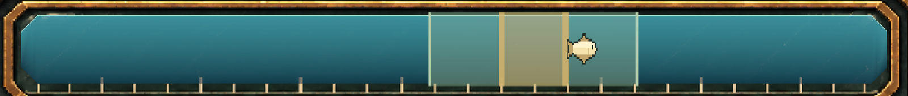

Water inside the beveled glass
The water body and foam now follow the angled glass opening, with clearance from the brass frame. The fish and accuracy bands retain their existing positions. The clip shows the final impact, full water and the two-thirds-second drain.
Full-level edge detail

Half-drained frame / Validation and implementation / Frame pixel comparison